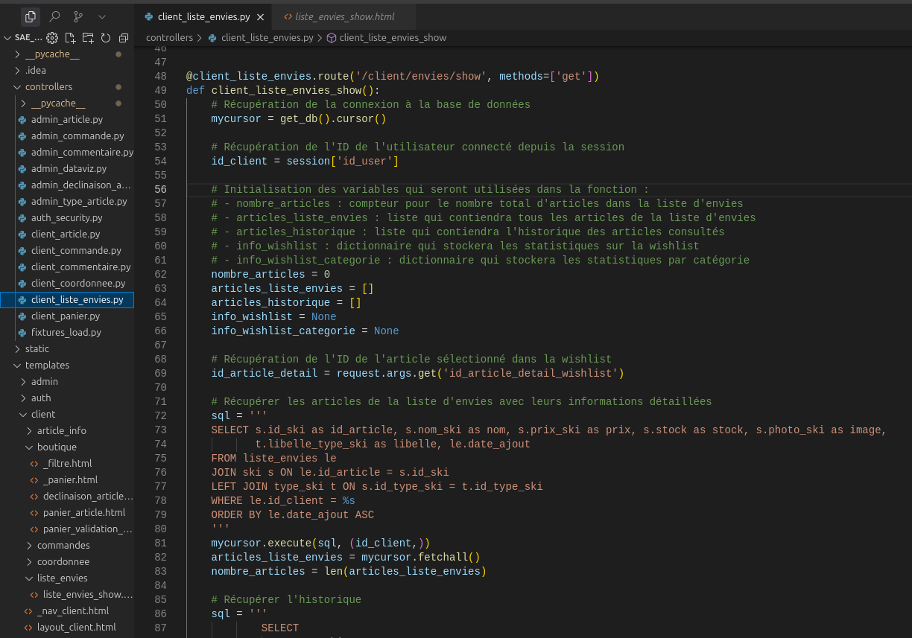

À propos du projet
Ce site de e-commerce est une plateforme moderne développée en Flask, permettant aux utilisateurs de naviguer, acheter et gérer leurs produits en ligne. Il offre une expérience utilisateur fluide avec des fonctionnalités avancées pour la gestion des commandes et des paiements.
Fonctionnalités principales
- connexion a un compte
- affichage du panier
- filtre des article disponible
- liste d'envie et historique produit
- notes et commentaire de produits
- plusieurs declinaison pour un article
Technologies utilisées
Traces
La figure montre une capture d’écran du fichier client_liste_envies.py, dans un projet Flask. Elle affiche une fonction client_liste_envies_show liée à la route /client/envies/show, qui permet de récupérer et d’afficher la liste d’envies (wishlist) d’un utilisateur connecté.
Le code commence par établir une connexion à la base de données via un curseur, puis récupère l'identifiant du client depuis la session (session['id_user']). Cette gestion de session est un savoir clé en développement web sécurisé. On observe ensuite l’utilisation du module request pour extraire un paramètre GET, montrant la capacité à interagir dynamiquement avec l’interface utilisateur.
Des requêtes SQL avec jointures sont utilisées pour récupérer les informations détaillées des articles de la wishlist (nom, prix, stock, image, etc.). Cela montre une bonne maîtrise de l’écriture de requêtes complexes et de la protection contre les injections SQL via l’utilisation de placeholders (%s).
Le code initialise aussi plusieurs structures (listes, dictionnaires) destinées à contenir les résultats ou statistiques, illustrant un savoir-faire en structuration des données avant affichage.
Cette fonction montre donc la mise en œuvre combinée de plusieurs savoirs en développement web : gestion de session, traitement des requêtes HTTP, interaction avec une base de données, et organisation logique du backend. Elle témoigne d’un savoir-faire solide en architecture serveur dans le cadre d’une application web interactive.